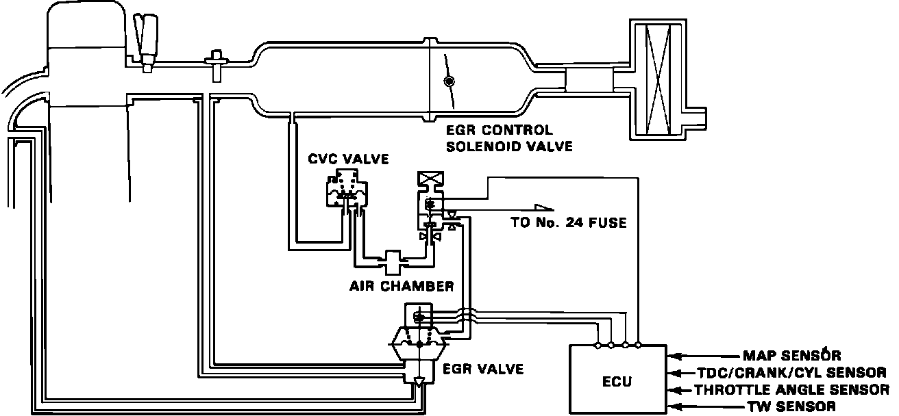

Exhaust Gas Recirculation: Description and Operation
Fig. 27 Exhaust Gas Recirculation System (EGR):

The EGR System is designed to reduce oxides of nitrogen emissions (NOx) by recirculating exhaust gas through the EGR valve and the intake manifold into the combustion chambers. It is composed of the EGR valve, CVC valve, EGR control solenoid valve, PGM-FI ECU and various sensors.
The ECU contains memories for ideal EGR valve lifts for varying conditions. The EGR valve lift sensor detects the amount of EGR valve lift and sends the information to the ECU. The ECU then compares it with the ideal EGR valve lift which is determined by signals sent from the other sensors. If there is any difference between the two, the ECU reduces or increases current to the EGR control solenoid valve to reduce or increase vacuum applied to the EGR valve.